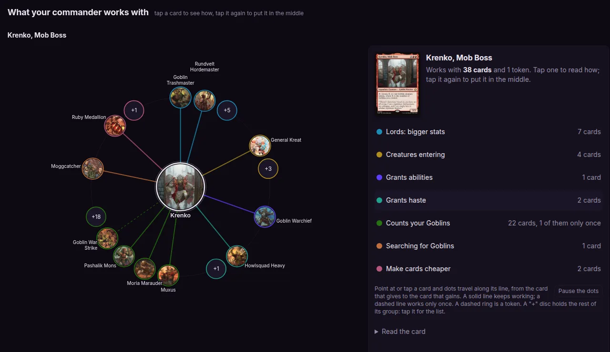
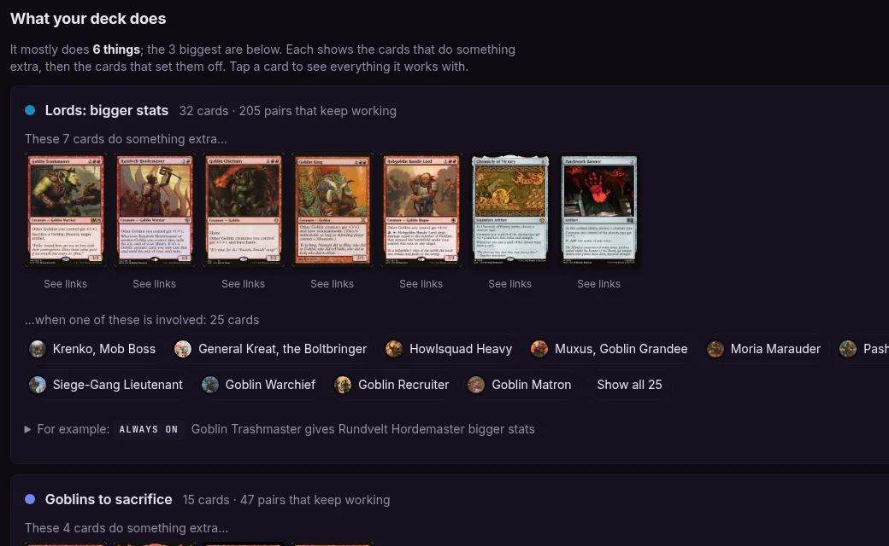
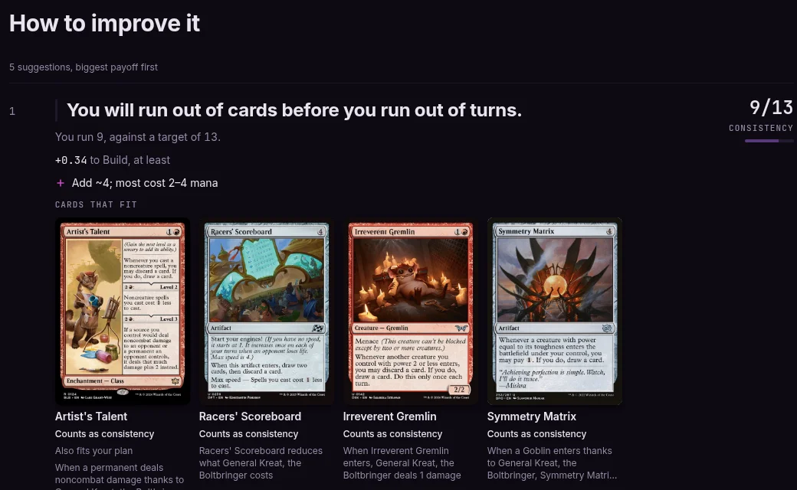
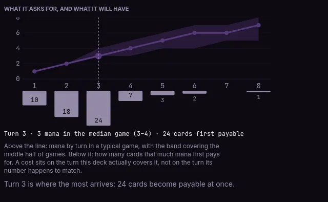

How it works
Paste a Commander decklist and EDH Seer shows you which of your cards work together, with the sentence that says why. It only claims a pairing it can put into words, so you can check every one of them against the cards themselves.
Analyse your deck Browse commanders
The first half of this page is for the player reading a report, in plain words. The second half, under the hood, is for anyone who wants to dig into the code. Feel free to stop before it.
- 28,416
- cards read in full, of the 34,433 it knows
- ~495
- pairs of cards it points out in an average Commander deck
- 0
- AI calls when you analyse a deck, so the same list always gets the same report
What you get
One sentence per claim, naming both cards and the mechanism. This is a real line from a real report, and the same pair is carried through every stage below.
When Siege-Gang Commander dies, Skullclamp draws you 2 cards
- causes Siege-Gang Commander is a creature, and its own ability lets you sacrifice a Goblin. Either way, something of yours dies.
- cares about Skullclamp reads "Whenever equipped creature dies, draw two cards." Same event, and a Goblin is a creature.
- check it Open both cards. If the printed text does not say this, the claim is wrong, and a wrong claim is a bug you can report with two card names.
What the report looks like
That sentence is one of a few hundred in a typical deck. Around them, the report maps the pairings, names what to fix first, and works out whether your mana can cast what you drew. This is a real Krenko, Mob Boss list.




How it decides
Long before you paste anything, every card's printed text is read once and turned into two lists: what the card does, and what it reacts to. An AI does that reading, once per card, and it is only asked what each sentence says, never whether two cards are good together. When you analyse a deck no AI is involved at all. The tool checks lists against lists, which is why the same deck always gets the same report and every sentence can be traced back to a line on a card.
- Oracle textwhat is printed on the card
- Segmentone sentence at a time
- Normalizethe model, once per card
- Deriveclauses become events
- Matchcauses meets cares about
- Reporta sentence per claim
The one step that costs money, paid once per card by the project and never by you, and the only step an AI touches. Everything after it is plain rules that can be re-run for free, which is what makes a wrong claim fixable rather than permanent.
How a pair is found
A pair is found when something one card causes is something another card cares about. Both sides carry details that all have to agree: what kind of card it is, who controls it, whether it is a token. The report calls a found pair a pairing.
Pairing. When a creature enters thanks to Krenko, Mob Boss, Impact Tremors deals 1 damage.
No pairing. It cares about a creature entering, and a fetched land is not one.
Those details are where the tool earns its keep, and where it is most often wrong in an interesting way. The rules that decide them are written by people, checked against the game's own rulebook, and every one of them is a place a mistake can live.
What it won’t pretend to know
A large part of the engine exists to say nothing. Each of these is a mistake it once made.
- A job is not a pair. Mana rocks, removal, card draw: cards every deck needs, that do their job on their own. They are counted, not paired. Sol Ring gets no sentence with every spell it helps you cast. The report counts it as one of your mana sources.
- A card that names itself means itself. "This creature", "this spell", the card's own name. Reading those as a class once produced three quarters of all false edges. "This creature deals 2 damage" on Siege-Gang Commander is about Siege-Gang Commander.
- Playing Magic is not a pair. Something every card in every deck does cannot single any card out. "Whenever you cast a spell" forms no pairing on its own.
- A card cannot feed its own trigger. A creature attacking does not satisfy its own "whenever a creature attacks". The card would be claiming synergy with itself.
- An unreadable card is reported, not guessed. Text the tool cannot make sense of is marked as unread rather than matched to the nearest thing that fits. A missing claim is better than a confident wrong one.
- Popularity is not a pair. Nothing here comes from how many decks run a card. A card no one plays and a staple in every deck are read the same way.
How much to trust it
- 98.7%
- of the sentences it prints today were judged correct by a person, 421 checked
- 91.4%
- of the pairs a person confirmed real are still found today, 383 held and 36 lost
Measured 2026-09-08. A person has judged 895 pairs of cards from the 71 real Commander decks the tool is calibrated against, and that set is frozen. Today's engine prints 421 sentences about those pairs, and 98.7% of them are ones the person agreed with; the true figure is very likely between 97.1% and 99.5%, written [97.1, 99.5]. Separately, 419 of the pairs were confirmed real, and the engine still finds 383 of them. The two numbers only mean anything together: a tool that deleted every sentence it was unsure of would score 100% on the first and collapse on the second. Every change to the engine is checked against this set before it ships, so a fix that quietly deletes real pairs shows up as a number rather than a feeling.
What it cannot see
- A card it has not read. A card outside the 28,416 forms no pairings, and the report lists it as unread rather than pretending the deck is fully understood. Its mana cost, type and text still count everywhere else.
- How much. A pair is either found or not. Krenko, Mob Boss handing Impact Tremors a token every turn and a lone creature entering once are the same pair.
- A search for anything. A tutor or a recursion spell pairs when it names a kind of card: "search your library for a Goblin" pairs with your Goblins, "return an artifact card" with your artifacts. "A card" or "a creature card" names most of a deck, so it pairs with nothing rather than with everything.
Try it on your own deck. Paste a list, or a Moxfield or Archidekt link. Free, no account, and nothing is stored.
Under the hood
The thesis in one sentence: a model reads oracle text once and turns it into structured data, and everything after that is deterministic code. Change a rule and you get a diff you can read, not a different mood. Here is the same pair, Siege-Gang Commander and Skullclamp, through each stage as the corpus holds it.
-
Stage 1 Segment free
Oracle text is split into clauses, one per printed ability, and each is classified. A keyword or reminder clause is inert and never reaches the model.
Stage 1 in full{id:1, kind:"ability"} "When this creature enters, create three 1/1 red Goblin creature tokens." {id:2, kind:"ability"} "This creature deals 2 damage to any target." -
Stage 2 Normalize the model, once per card
Each clause becomes a structured sentence: an ability type, a trigger, and actions whose verbs come from a closed vocabulary. An answer outside the vocabulary is refused and not persisted.
Stage 2 in full{"id": 2, "abilityType": "activated", "actions": [ {"verb": "sacrifice", "object": "a Goblin"}, {"verb": "deal-damage", "object": "any target", "amount": "2"}]} -
Stage 3 Derive free
Clauses become typed game events: what the card cares about, and what it causes. Events no card prints, like a creature being cast or dying, are added from its printed characteristics.
Stage 3 in fullSiege-Gang Commander emit: dies {control:"you", subtype:"goblin"} Skullclamp trigger: dies {control:"you", type:"creature"} effect: draw-card -
Stage 4 Match free
Every card's supply is compared against every other card's demand. Same verb, same controller, and a Goblin is a creature through a subtype hierarchy generated from MTGJSON, so a claim forms.
Stage 4 in fulltag = "dies:creature" text = "When Siege-Gang Commander dies, Skullclamp draws you 2 cards"
The order the gates run in
One function decides every claim, and the order is deliberate: each gate assumes the ones above it have passed. Any gate can refuse, and a refusal is silent by design.
- Same verb? Including the rules bridges: a death is leaving the battlefield, and a life-loss trigger accepts non-combat damage.
- Big enough? A trigger that names a size, like "5 or more damage", meets only a producer that states a size satisfying it.
- Is the demand restricted? "Targets only" and the like are refused. A targeting restriction is a demand nothing here can check.
- Instant-speed relaxation. A producer that acts at instant speed and picks its own victim can satisfy a combat-state demand it never names.
- Origin compatible? The zone the object came from.
- Self-supplied? A card must not satisfy its own trigger: combat, cast, its own entry, or doing something to itself.
- Special-cased verbs. A graveyard fill, a counter added or removed, and damage each route to their own comparison.
- Subjects compatible? Through the type hierarchy, with token, not-cast and enters-tapped. A Goblin is a creature; a land is not.
Read the rest
The engine is open source. These are the documents, in the order they are worth reading.
| How it works | the tour, with diagrams and this pair worked the whole way through |
| Stages 1 to 4 | a page per stage: what it reads, what it writes, what it costs, the failure modes it has hit |
| Schema reference | every vocabulary, version constant and field. Generated from the source and gated by a test |
| Runbook | what to run, what it costs, how to measure a change |
| Engineering log | what was measured, on what day, and what turned out to be wrong |
| Contributing | how a change is measured before it merges |
| Security | how to report privately |
A wrong edge is a bug with a name and a sentence attached. Report it with the two card names and the line the report printed, or read the source.